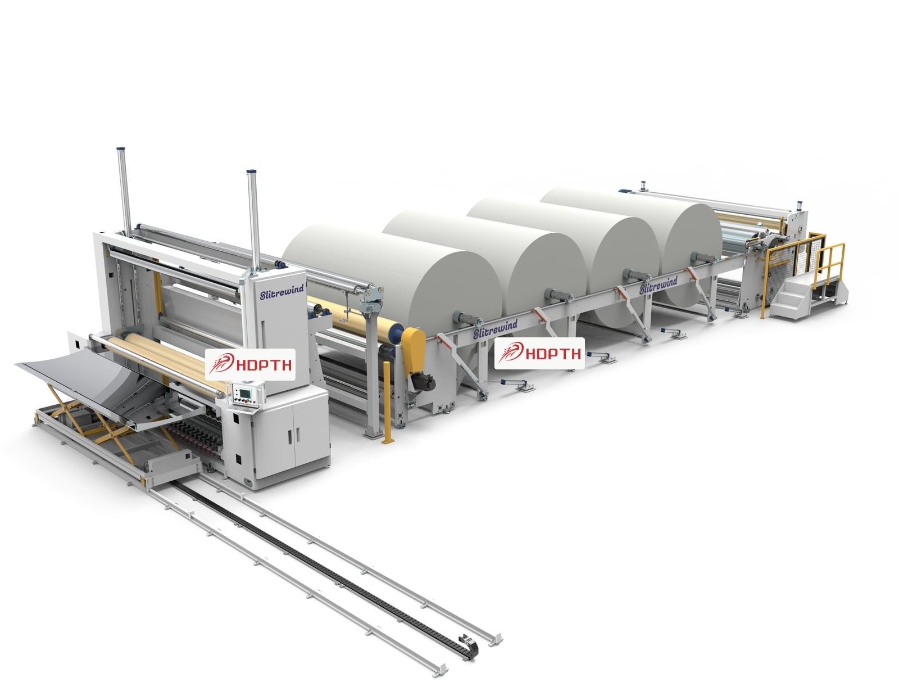

Stable Rewinding
Consistent roll formation for industrial production.
For overseas manufacturers, rewinding quality affects downstream efficiency, roll handling and product consistency.
- Suitable for nonwoven, paper, film and flexible roll materials
- Supports stable tension and controlled rewinding process
- Can be integrated with slitting, perforating and auxiliary equipment
- Custom machine layout based on material and roll requirement
Applications
Hygiene product supply chains, medical nonwoven materials, wipes, paper, film and industrial roll processing.
RFQ Data
Share material type, parent roll width, target roll diameter, required speed and downstream process.
Technical Data from Product Manual
Winder and economical winder configuration options.
| Item | Winder | Economical Winder |
|---|---|---|
| Production Speed | 40-600 m/min | Up to 180 m/min |
| Rewinding Width | Custom 1000-4500 mm model range | 1200-3800 mm |
| Rewinding Diameter | 1200-2500 mm | 1200 mm |
| Roll Core Requirement | 75-250 mm | Project-based |
| Equipment Weight | 3200-8600 kg | 2000-5000 kg |
| Installed Power | 15-45 kW | 7-20 kW |
| Effective Operating Power | 10-35 kW | Project-based |
| Air Supply | 0.6 MPa | 0.6 MPa |
| Applicable Products | PE film, papermaking, spunlace, spunbond | PE film, papermaking, spunlace, spunbond |
| Materials | Nonwoven fabric, PE film, paper, hot air, spunlace, spunbond | PE film, paper, spunlace and spunbond materials |